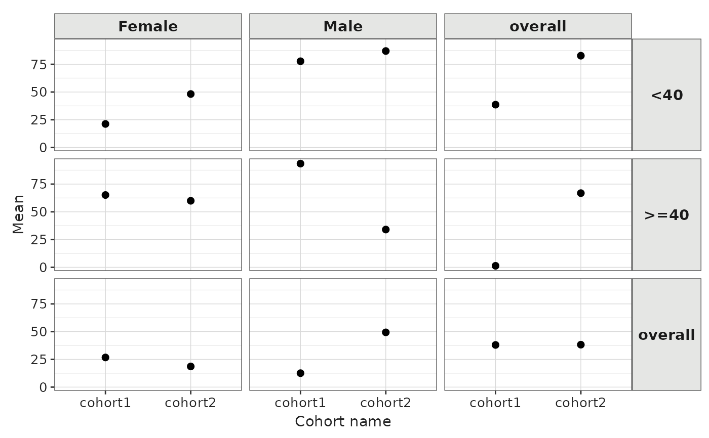

Create a scatter plot visualisation from a <summarised_result> object
Source: R/plot.R
scatterPlot.RdCreate a scatter plot visualisation from a <summarised_result> object
Usage
scatterPlot(
result,
x,
y,
line,
point,
ribbon,
ymin = NULL,
ymax = NULL,
facet = NULL,
colour = NULL,
style = "default",
type = "ggplot",
group = colour,
label = character()
)Arguments
- result
A
<summarised_result>object.- x
Column or estimate name that is used as x variable.
- y
Column or estimate name that is used as y variable.
- line
Whether to plot a line using
geom_line.- point
Whether to plot points using
geom_point.- ribbon
Whether to plot a ribbon using
geom_ribbon.- ymin
Lower limit of error bars, if provided is plot using
geom_errorbar.- ymax
Upper limit of error bars, if provided is plot using
geom_errorbar.- facet
Variables to facet by, a formula can be provided to specify which variables should be used as rows and which ones as columns.
- colour
Columns to use to determine the colours.
- style
A character string defining the visual theme to apply to the plot. You can set this to NULL to apply the standard ggplot2 default style, or provide a name for one of the package's pre-defined styles. Refer to the
plotStyle()function for all available style pre-defined themes. For further customization, you can always modify the returned ggplot object directly.- type
The desired format of the output plot. See
plotType()for supported plot types.- group
Columns to use to determine the group.
- label
Character vector with the columns to display interactively in
plotly.
Examples
result <- mockSummarisedResult() |>
dplyr::filter(variable_name == "age")
scatterPlot(
result = result,
x = "cohort_name",
y = "mean",
line = TRUE,
point = TRUE,
ribbon = FALSE,
facet = age_group ~ sex)
#> `geom_line()`: Each group consists of only one observation.
#> ℹ Do you need to adjust the group aesthetic?
#> `geom_line()`: Each group consists of only one observation.
#> ℹ Do you need to adjust the group aesthetic?
#> `geom_line()`: Each group consists of only one observation.
#> ℹ Do you need to adjust the group aesthetic?
#> `geom_line()`: Each group consists of only one observation.
#> ℹ Do you need to adjust the group aesthetic?
#> `geom_line()`: Each group consists of only one observation.
#> ℹ Do you need to adjust the group aesthetic?
#> `geom_line()`: Each group consists of only one observation.
#> ℹ Do you need to adjust the group aesthetic?
#> `geom_line()`: Each group consists of only one observation.
#> ℹ Do you need to adjust the group aesthetic?
#> `geom_line()`: Each group consists of only one observation.
#> ℹ Do you need to adjust the group aesthetic?
#> `geom_line()`: Each group consists of only one observation.
#> ℹ Do you need to adjust the group aesthetic?
